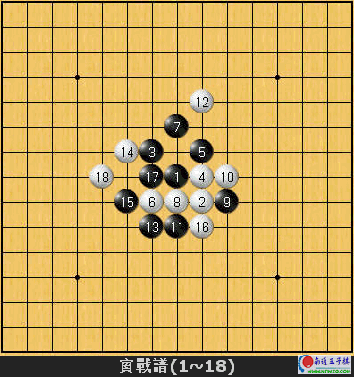
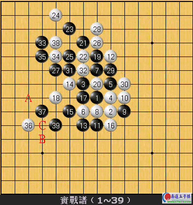

1991年第二届五子棋世界锦标赛
黑:中村茂
白:山口真琴

首先，按照前例先大略向读者介绍一下这两位棋手。中村茂九段目前仍然是世界排名第一的棋手，曾连续两年在第一、二两届世界e夺得冠军，在当时被公认槭恰傲珠世界第一高手”，实力相当坚强。山口真琴九段则是在第40期日本连珠名人赛中多次大胆裼美砺凵鲜呛谟诺暮阈强局震惊世界棋坛，并击败当时的卫冕者长谷川一人九段夺得名人称号！是一位富有创造力和深度算路的顶级好手。本局褡1991年第二届世界的对局，以下就让我们来欣赏一下这两位优秀棋手的对弈是怎N样的一个情况。
斜月开局，白10置於J9点活三是比较流行的下法。从谱中不难看出双方急於跳脱定石的束缚，意图求变。进行至白18手止，白方大致上暂时封锁住了黑方的攻势。也请各位读者想想，换作是你拿黑子的话，接下来会选择怎N样的下法？从盘面上整个来看，黑15和17所形成的一个活二相当耀眼。
很明显的，很多初中阶棋友的第一感一定会先将黑唯一的活三给拉出去(比如说将黑19下在E6或H9的活三)，然后再使用连续的活三与n四找找看能不能设法作出死四活三的型态。但这种想法在此局面是完全行不通的，因樵谡飧鼍置嫦潞诘牧续活三与n四的攻势不但不能得逞，而且n完之后将带给白方强大的外势导致对黑极椴焕的局势。
那N，中村茂是怎N样打开此时的局面的呢？

实战黑19作出四三前一手从上边进行，待白20去防守一子后，黑21使得黑上方棋型顿时变得稍微强势起来了。但仅仅单靠这一局部的攻势是很难得逞的，黑23以下积极扩展上方黑势。黑29之后31连续n两个四是很好的手顺，因楹29如果单在F10跳三的话，白可在D10防守黑发展困难。黑33跳四之后於35位是相当猛烈的著手！此棋留有D9和F12→E12两个次一手段。白36跳四先手破解黑D9位的死四活三是最好的一手，接著再38防止黑上方的另一取胜手段。但黑39榍擅盍结上下方资源的一子v留有A和B→C两个次一手段w，白方只好投降。
回顾本盘棋，黑19以下宛如魔术般的逼攻手段令人激赏，令人不得不佩服世界级五子棋高手的中盘战力竟是如此高深莫测！
佩服得五体投地
这样子好，可以试一下